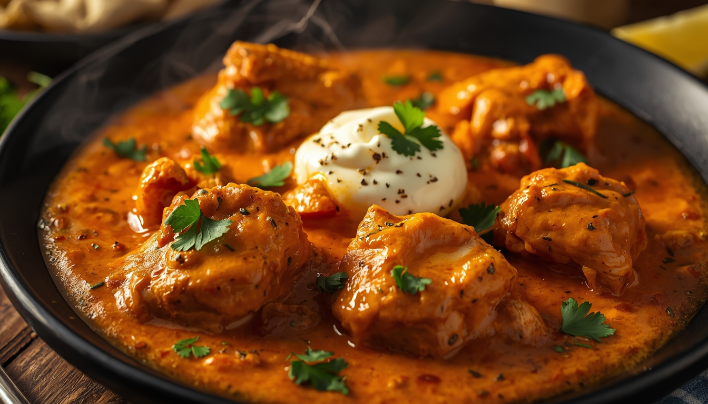

Non-Veg
Classic Butter Chicken
⏱ Prep time: 45 Minutes
Difficulty: Medium
Ingredients
- 500g Boneless Chicken, diced
- 1 cup Plain Yogurt
- 2 tbsp Garam Masala
- 1 tbsp Kashmiri Red Chilli Powder
- 2 tbsp Ginger Garlic Paste
- 1 cup Tomato Puree
- 1/2 cup Heavy Cream
- 2 tbsp Butter
- Salt to taste
Step-by-Step Instructions
- Marinate: Mix yogurt, ginger garlic paste, red chilli powder, and salt. Coat the chicken and let it rest for 30 minutes.
- Sear: In a hot pan, sear the marinated chicken until golden and cooked through. Remove and set aside.
- Make Gravy: In the same pan, melt the butter. Add the tomato puree and cook for 5 minutes until it thickens.
- Spice it up: Stir in the garam masala and remaining chilli powder. Cook until the oil starts to separate from the puree.
- Combine: Add the cooked chicken back into the gravy. Pour in the heavy cream and let it simmer on low for 5-7 minutes.
- Serve: Garnish with a swirl of fresh cream and coriander. Serve hot!